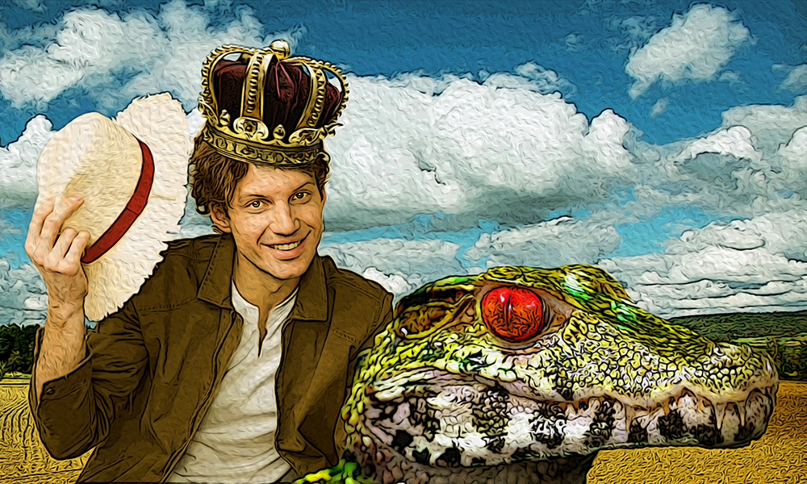
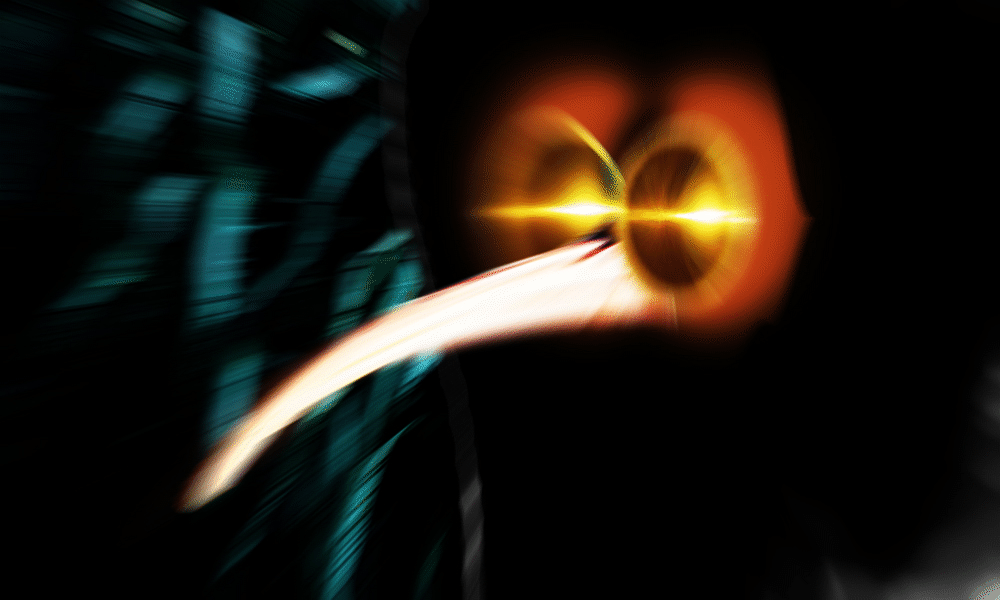

Far in the distant past of 2013, the story before you received an honourable mention from Writers of the Future only to slink into the shadows, never to be seen again. Now at long last Addison Smith gets our Winter issue moving with the futuristic tale of a reluctant hero who gradually comes to learn that, much like revenge, rescue is a dish best served cold.
As a professional specialist in both communication and literature, you might be forgiven for expecting Sharon Dawn Selby to already have a long list of fiction credits to her name - so imagine our surprise and delight to be able to present her first published story - one which underlines the traditional power of language and place, good manners, and proper introductions.

If there's a genre especially close to the heart of your humble editor, it's the Ghost Story: that grand denizen of the limbic, liminal domain between mere flighty fantasy and bluntly blundering horror (and there's a sentence that should fuel some enmities moving forward). Anyway, isn't it so often often the case with these strange inhabitants that "moving forward" is at the very heart of the matter?
There's nothing quite like The Gothic for wrapping a reader in a strange atmosphere: painting with morbid darkness, sinking a chill deep down into the bones, or perhaps too-vivid colour as fangs sink into the richest vein. Scott J. Couturier offers up an incomparable gift in answer to the age-old question, "What do you give to the man who has, or had, everything?"
Is it possible that one thing is more important that all the others when it comes to telling a good tale? Hard to say - but what is certainly true is that, whether a story soars or has flaws, a distinctive sense of voice will make amends for whatever sins it might contain. Matthew Wilson gives us sins large and small... and voice as well.

Humour is a many subjective thing, often called the hardest thing to write, but in our opinion Mike Morgan has pulled it off here. Much as his hero demonstrates, you can achieve plenty with recourse to just a little bit of charm - of course, when it comes to fantasy, charm can also be the problem...
Romance fiction isn't always the first thing associated with the speculative genres, but there are many fine examples in which the two are well-wedded, and it is surely inarguable that there is nothing in human experience to compare with beginning a new relationship for the sensation of leaping into the unknown. Trisha McKee presents exactly such a case, of two people reaching out towards each other and finding something far from understood.

Martin Clark has been contributing to Mythaxis Magazine since 2010, with and without the "M". Twenty-eight pieces have appeared in that time, invariably featuring a variety of hard-bitten heroes and villains locked in conflict, so why not one more for his anniversary? We weren't really looking for seasonally themed pieces for the issue, but you have to make an exception when the right someone's nipping at your nose.
Our recent issues have welcomed a host of new faces to Mythaxis, in this latest including a first fiction sale - and now we are proud to also present not just that but a first ever publication, full stop! David Whitmarsh's story of transitions introduces us to a world clawing its way back from the brink - but things with claws must always be treated with caution...

When we first read Fabiyas M. V.'s submission, we didn't know quite what to make of it... other than "a definite purchase"! Another piece with distinctive voice, it tells its story with the same blunt directness we find boasted by its unexpected hero, but one which veils a thread of sly humour, right up to the final line.